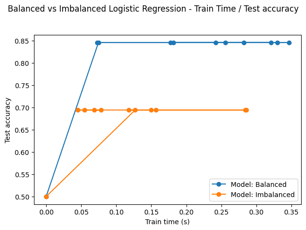
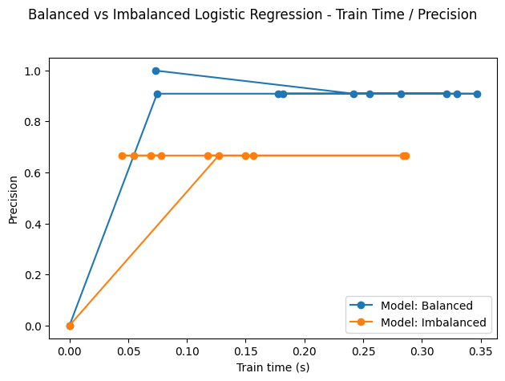
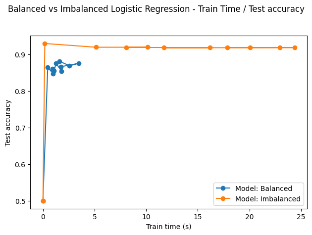
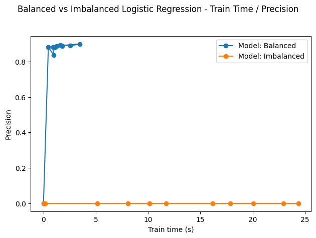

Class Imbalance

Class Imbalance is a common challenge in statistics and machine learning where the distribution of the target variable is skewed, resulting in several issues such as bias towards the majority class or over-fitting.
However, and since machine learning is application and experimentation driven, class imbalance should not be handled in a nomothetic manner.
In classification tasks, class imbalance refers to the Target variable's, also know as Class, skewed distribution. In other words, for binary classification for example, the proportion of the positive class is much lower than that of the negative class. How much lower ? Well, from my understanding, there isn't a consensus on the degree of imbalance, expect for extreme degree cases (where the consensus is at 1% or less).
Nevertheless, we can adopt Google's categorization of the degree of imbalance:
| Degree of imbalance | Proportion of Minority Class |
|---|---|
| Mild | 20-40% of the data set |
| Mild | 1-20% of the data set |
| Extreme | Less than 1% of the data set |
After machine learning transitioned "from the status of academic discipline to that of applied science [emphasis added] a myriad of new issues, not previously considered by the machine learning community, [came] into light. One such issue is the class imbalance problem" (Japkowicz & Stephen, 2002)
Basically, when confronted with imbalanced data, many algorithms don't perform well. This could be due to several problems. In the following sections we'll discuss the most prominent ones :
Let's dig a bit deeper to unlock each area separately; i.e. algorithms, data, and evaluation.
Several machine learning models are sensitive to imbalanced data. That is mainly because they were not mathematically designed to deal with this specific problem. If we take logistic regression as an example, the cost function we are optimizing in the case of a binary classification problem is
which treats both classes "equally".
I tried to illustrate this in a notebook that you can find here. The charts below have been extracted from the notebook and illustrate how the accuracy and precision change with train time on balanced versus imbalanced data.
|  |  |
On both metrics, the algorithm performs better on balanced data. Still, its performance on imbalanced data is not too bad, given the mild degree of imbalance (and most likely the quality of data as well).
However, the problem can become more pronounced for "real datasets", because they're larger and exhibit more complexity. For the sake of example, I trained a logistic regression on a bank's customer dataset.
In contrast with the ionosphere data, the precision is very low and does not improve over train time on the imbalanced data.
|  |  |
With that being said, some classification algorithms incorporate techniques to handle class imbalance; By adjusting class weights, for example, or assigning different penalties to mis-classification errors on the different classes.
The figure below shows how, for different class weights, the model's accuracy changes on both train and test sets.
Note that the 1.79 weight in the second plot of Fig.4. represents the rounded proportion of negatives on positives; and the weights in the third plot of Fig.4. are inspired by the heuristic used by scikit-learn (link here).
All in all, lots of work has been put in the area of cost sensitive learning (i.e. algorithms that are built to directly handle imbalanced data) and that of cost sensitive meta-learning.(i.e. methods that alter baseline insensitive algorithms into sensitive ones)
One cost sensitive meta-learning method that's "very simple, yet general and effective" (Sheng & Ling, 2006) is thresholding, whereby the practitioner "selects a proper threshold from training instances according to the misclassification cost" (Sheng & Ling, 2006)
In their paper, Sheng & Ling, demonstrate how this simple method can yield better results than other meta-learning approaches on different datasets.
We can also look at the problem (i.e. classification) differently. That is, instead of looking to classify data into corresponding classes, we can treat the minority class as a discrepant event (anomaly, outlier, irregularity...etc.).
In this case, we can use another algorithmic approach: one-class classifiers.
One-class classifiers only have one class as a target. They learn to focus on patterns that discriminate "normal" instances from "abnormal" ones.
This approach however comes at the cost of discarding patterns associated with the majority class. In practice, and In order to avoid this, one can employ strategies such as stacking or voting to construct a final classifier that would incorporate the outcome of multiple classifiers specializing in different inference tasks.
In summary, there exists different algorithmic approaches to dealing with class imbalance depending on what data we're confronted with (more on this in the data section) and what our problem frame consists of (i.e. business objectives, problem scope,..etc.) :
To mitigate the imbalance challenge, one must look at the problem's data. There are several methods that are typically used to work with the data.
It is very important to understand how an algorithm works in order to engineer better representations. This is not an easy task indeed, especially in the case of deep neural networks.
Working with data in general can also become more challenging in the case of large datasets (and thus, large feature vectors) especially when a model exhibits low performance on the imbalanced dataset.
It is also very important to note that, technically, class imbalance is not always the problem. In fact, one can imagine that a dataset with a clear decision boundary can indeed be classified no matter the degree of class imbalance or skewness. However, when the data is overlapping, an algorithm will find it harder to learn from the data in order to separate between classes even if the data is balanced.
This specific problem is referred to as class overlap.
Another problem that may occur is when classes encompass different small representations. If we think of this in terms of clustering, we can look at the original classes as macro-clusters containing different micro-clusters.
In this article, we referred to class imbalance and class distribution skewness with the same taxonomy. However, Das et al. (2018), use this taxonomy differently and categorize different distribution-based data irregularities into 3 categories:
As discussed above, a dataset can present different problems, and so it is important to ascertain the specific problem (or problems) the data at hand is presenting in order to find efficient solutions (i.e. making assumptions, developing hypotheses, and taking manageable risks during the training phase.).
Below is an attempt to summarize some of the most frequent data problems that might take place when confronted with a classification problem.
Rather than relying on accuracy, other evaluation metrics can be more informative on the performance of the model and/or potential adjustments that might help tweak it for improvement.
One of the best diagrams that summarizes some of these metrics is the one below:
The reason I use this diagram regularly is because visually it can give an idea about which metrics will be sensitive to class distribution.
Let's take accuracy as an example. The fact that this metric uses a sum of TP (true positives) + TN (true negatives) over P (actual positives) + N (actual negatives) shows that if one class proportion (P or N) increases or decreases, the accuracy will be affected even if the algorithm's performance remains the same.
Hence, choosing an adequate combination of evaluation metrics, is crucial to provide better insights on experiments and guide the practitioner's hypothesis construction, testing and conclusion or decision inference.
On his blog "machine learning mastery", Jason Brownlee suggests a simple guide to choosing the right metric given different data scenarios. It's a great starting point - I would however use it carefully during practice and not hurriedly rely on it to choose an evaluation metric.
Article template by distill.pub
If you see mistakes or want to suggest changes, please create a discussion entry on GitHub.
Please cite this work as
NNZ. (Dec 2023). Class Imbalance. NonNeutralZero.https://non-neutralzero.github.io/article-class-imbalance/.
BibTeX citation
@article{nnz2023classimb,
title = "Class Imbalance",
author = "NNZ",
journal = "nonneutralzero.com",
year = "2023",
month = "Dec",
url = "https://non-neutralzero.github.io/article-class-imbalance/"
}